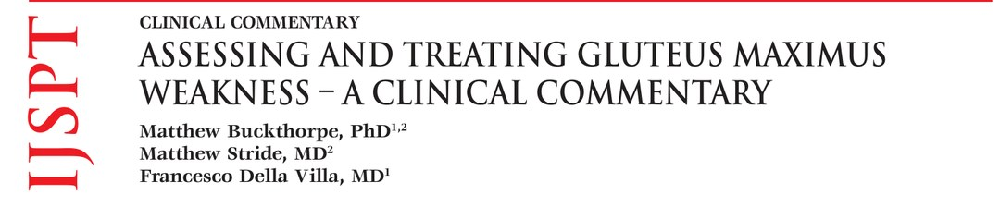
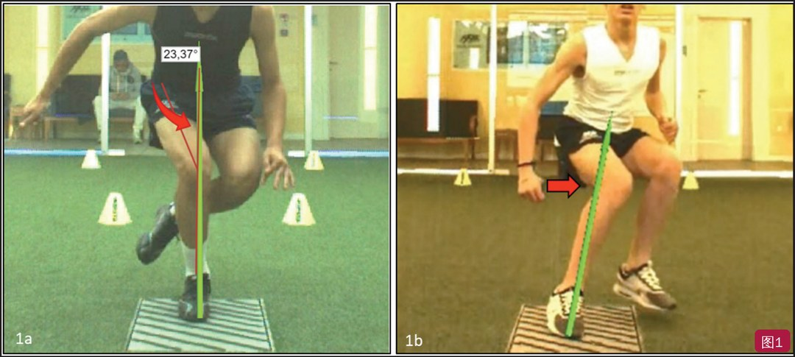
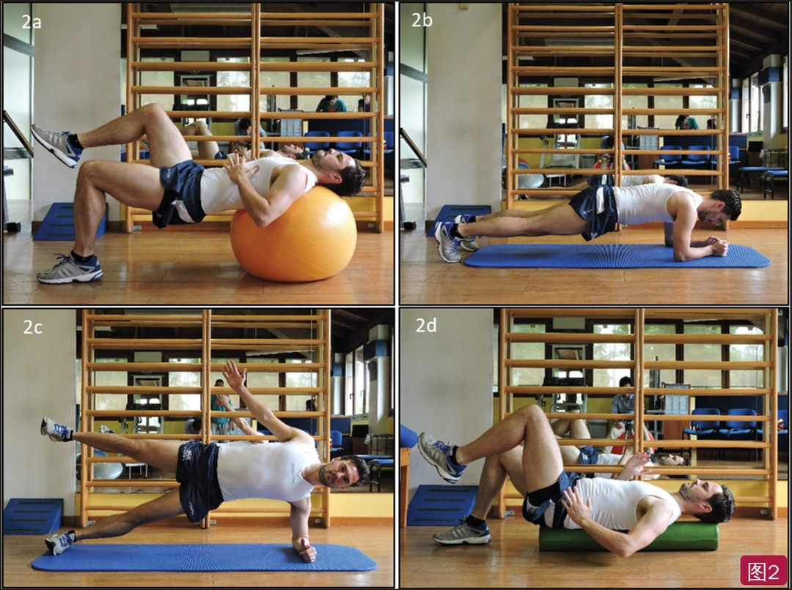
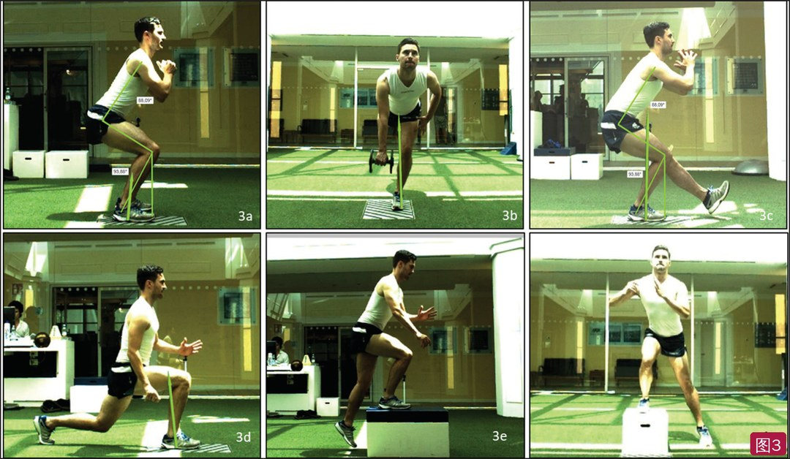
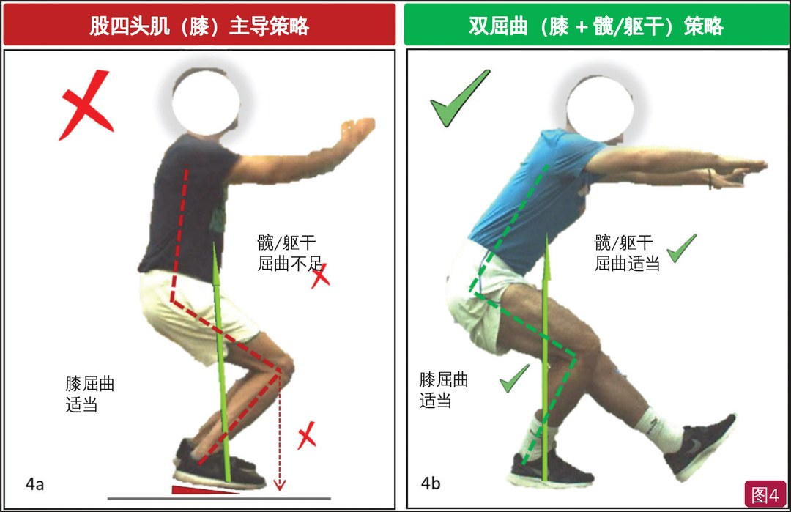
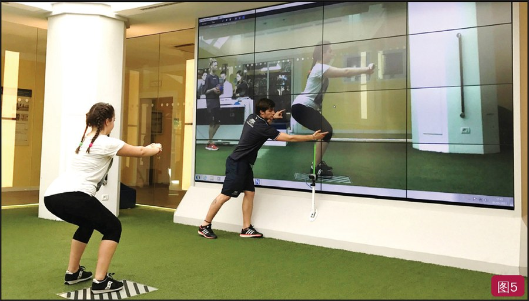
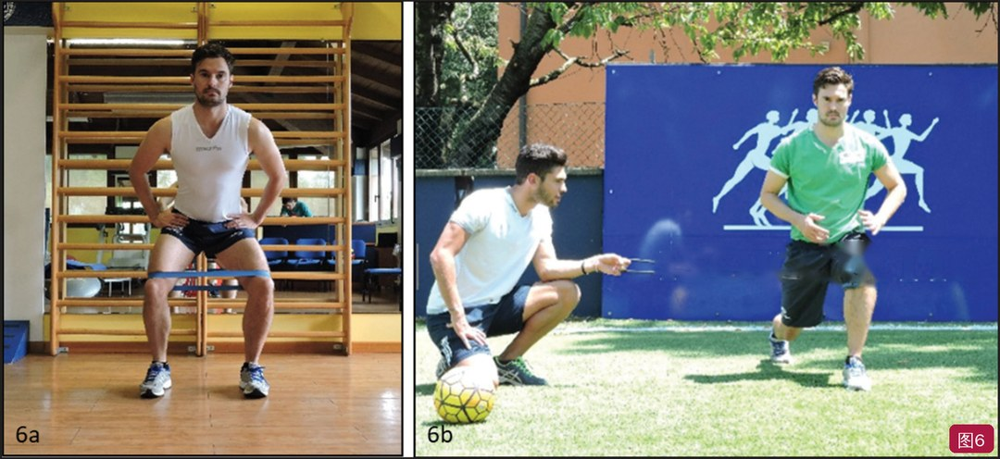
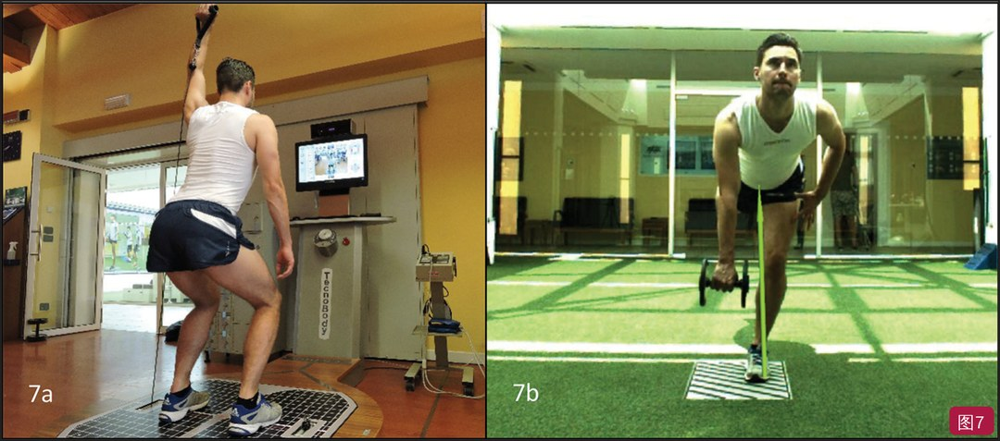
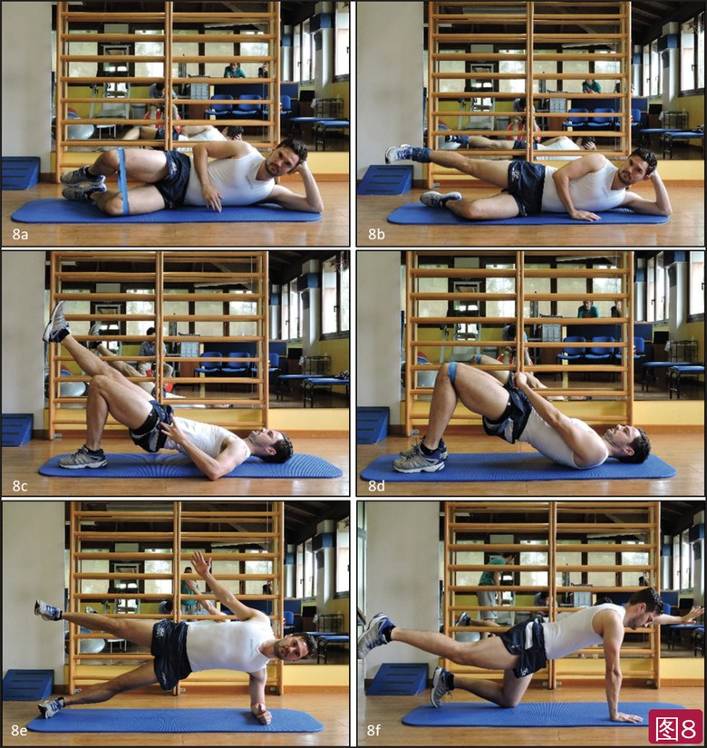
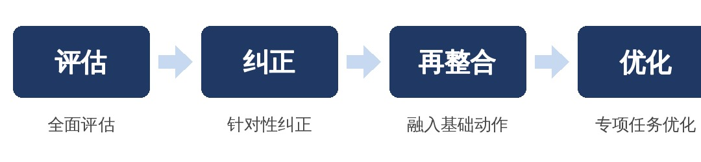

🔖原文首页（IJSPT 2019 年第 14 卷第 4 期）
📚 文献卡片
▪ 英文原题：Assessing and Treating Gluteus Maximus Weakness – A Clinical Commentary（臀大肌无力的评估与治疗：临床评论）
▪ 作者：Matthew Buckthorpe, PhD · Matthew Stride, MD · Francesco Della Villa, MD
▪ 机构：Isokinetic 医疗集团，FIFA 卓越医学中心（意大利博洛尼亚；英国伦敦）
▪ 期刊：International Journal of Sports Physical Therapy（IJSPT）
▪ 年卷期：2019;14(4):655-669
▪ PMCID：PMC6670060
▪ 文章类型：临床评论（Clinical Commentary）
▪ 证据级别：5 级
▪ 关键词：gluteus maximus · muscle imbalances · movement system · performance training · rehabilitation
臀大肌（GM）是人体最大、最有力的肌肉，占全身肌肉横截面积的 16%，是人类直立姿势进化的产物。它对日常活动、爆发性运动表现和多个关节的稳定都很重要，却又很容易被抑制、变弱。
臀大肌功能障碍与髌股疼痛、前交叉韧带损伤、下腰痛、腘绳肌拉伤、股骨髋臼撞击、踝扭伤等多种损伤和慢性疼痛有关，也可能是“受过伤的人更容易再受伤”的关键原因之一。但面对临床常说的“臀肌睡着了”，真正把证据转化成实操的文章并不多。
本文是一篇临床评论，讲了四件事：臀大肌为什么重要、为什么会失能、怎么评估、怎么系统地纠正，适用于康复、损伤预防和运动表现训练。
| 环节 | 关键点 |
|---|---|
| 三种角色 | 局部稳定肌、整体稳定肌、整体动力肌 |
| 失能原因 | 久坐、骨盆前倾、屈髋肌紧张引起的交互抑制与协同肌代偿、疼痛和关节肿胀 |
| 评估四项 | 力量（俯卧屈膝伸髋、短力臂桥）、激活（单腿桥做到力竭）、动作质量、骨盆排列与柔韧 |
| 治疗三步 | ① 恢复腰盆稳定与平衡 → ② 强化臀大肌并融入动作模式 → ③ 发展爆发力与专项控制 |
| 练到多少 | 激活 ≥40%～60% MVC 才有强化效果，约 70% 最理想；臀推峰值可达 172%～216% |
一句话概括：评估 → 纠正 → 再整合 → 优化，不只练“臀桥”，还要把臀大肌放回跑、跳、变向里。
• 起点：髂嵴后 1/4、骶骨和尾骨后面、腰部筋膜；近年还发现与臀中肌筋膜、髂骨、胸腰筋膜、竖脊肌腱膜、骶髂背侧韧带和骶结节韧带相连
• 肌纤维向外下走行，上部止于阔筋膜的髂胫束，下部止于股骨臀肌粗隆
| 角色 | 作用 |
|---|---|
| 局部稳定肌 | 节段稳定：经竖脊肌和胸腰筋膜稳定腰部；加压稳定骶髂关节；与腰大肌共同收缩稳定腰骶部；控制股骨头在髋臼内的平移；上部纤维经髂胫束可能帮助稳定伸直位的膝 |
| 整体稳定肌 | 离心/等长收缩控制三个平面的活动：防止躯干前倾和旋转（与对侧背阔肌组成后斜链）；单腿站立时稳定骨盆；防止股骨内收和内旋 |
| 整体动力肌 | 产生大的力量和功率，完成伸髋和股骨外旋；上部纤维外展、下部纤维内收 |
人体是一个联动系统，臀大肌失能时动作照样能完成，因为别的肌肉会代偿，也未必马上出现症状。但长期的协调和运动学改变，会累积成慢性“生物力学超负荷”损伤；关节在高负荷下被“压垮”时，也可能出现急性损伤（如 ACL 损伤）。
• 久坐被认为会降低臀大肌激活，时间长了就萎缩、变弱
• 臀大肌弱 → 更多依赖腘绳肌、髋内收肌等次要伸髋肌，临床称为协同肌主导（synergistic dominance）：身体总会选最省力的动作模式，而不管该谁当主动肌
• 这会加重协同肌的负担，可能导致它们疼痛、拉伤
• 骨盆前倾（常伴屈髋肌紧张、局部核心无力）会拉长臀大肌，让它处于力学劣势
屈髋肌过度活跃会交互抑制臀大肌。改良 Thomas 试验显示屈髋肌紧张（伸髋活动度小）的人，双腿深蹲时臀大肌激活更低、臀大肌/股二头肌共同激活比更低，但髋、膝伸展力矩相近——这就是协同肌主导。
• 疼痛是臀大肌的强力抑制因素：臀大肌激活延迟、减弱，腘绳肌和下背代偿；不仅腰痛，远处的踝痛也会这样
• Hodges 和 Tucker：疼痛触发神经肌肉改变以保护受伤部位——肌肉之间重新分配活动、改变刚度或动作模式；短期有保护作用，长期却影响肌骨健康、再伤风险和运动表现
• 关节肿胀/炎症会引起关节源性肌肉抑制：Freeman 等向髋关节囊注液模拟肿胀，臀大肌激活出现有临床意义的下降
• 常用俯卧屈膝 90° 伸髋：屈膝让腘绳肌“主动不足”，减少其贡献；徒手肌力测试之外，作者建议尽量用手持测力计
• 也可以用等速测力计测等长或等速伸髋力量
• 短力臂桥（计时等长或计次动态）能反映臀大肌的力量耐力，临床上方便，适合定期监测
在运动类任务中定性观察动作：髋内收、内旋，以及随之出现的膝内移，提示臀肌功能不佳（图1）。之后还要区分是运动控制问题（动作模式改变）还是肌肉本身问题（肌肉小、弱、激活不足）。要在深蹲、硬拉、上/下台阶等基础动作，以及落地、跳跃、变向等运动任务中都看一看。

🔖图1：动作模式的定性评估可以提示特定肌肉的功能。股骨内旋、内收（1a）和由此出现的膝内移（1b），可能提示臀肌功能不足；图中为两名年轻男运动员的跳跃和减速任务
• 臀大肌可能力量够、但在功能任务中激活不足或延迟：屈髋肌短（改良 Thomas 试验 <0°）的人，双腿深蹲时臀肌激活只有屈髋肌正常者（>15°）的一半，而两组单独测的臀大肌力量相近
• 研究多用表面肌电（sEMG），但临床上成本高、耗时，而且有串扰、信度、电极移位、标准化等诸多局限
• 作者的临床做法：把动作（如单腿桥）做到力竭，看能坚持多久/多少次（力量耐力），以及哪块肌肉先累（通常就是最活跃的那块）
• 短力臂桥时腘绳肌处于缩短位，腘绳肌抽筋通常提示协同肌主导
• 这种方法便于患者教育、提高参与感，也有助于自我管理（靠自身感觉，不依赖仪器）
作者建议使用：
• 改良 Thomas 试验：评估屈髋肌柔韧性
• 站立姿势分析
• 主动直腿抬高：评估腘绳肌柔韧性
• 功能动作中的骨盆排列与控制，特别是双腿深蹲/过顶深蹲
臀大肌失能的原因很多，所以建议用整体方案，并以评估结果为依据（臀大肌弱不弱、屈髋肌紧不紧等），决定每个环节花多少时间。
• 骨盆前倾既可能来自姿势控制肌（臀大肌、腘绳肌、腹横肌、腹直肌）无力，也可能来自股直肌、腰大肌、竖脊肌紧张
• 紧张/短缩的肌肉要用手法松解 + 柔韧性训练放松、拉长；泡沫轴自我按摩能增加关节活动度，并提升随后的功能动作表现
• 教会患者在静态和动态中保持骨盆排列与稳定
• 伤后局部稳定系统（如腹横肌）常被抑制，整体稳定肌/动力肌只好去做局部稳定的事，影响臀大肌募集。所以要重新激活并整合局部稳定系统，同时发展整体稳定肌的力量和耐力（图2）

🔖图2：整体方案中应包含的局部与整体核心稳定训练示例——躯干置于瑞士球上的单腿桥（2a）、前平板支撑（2b）、侧平板支撑（2c）、躯干和骨盆在长泡沫轴上保持稳定时交替抬腿（2d）
| 参数 | 证据要点 |
|---|---|
| 强度 | 训练研究中有效强度为最大强度的 40%～95%；激活 40%～60% 是产生强化效果的最低要求，约 70% 最理想（增肌） |
| 低负荷 | 低负荷训练只要每组接近主动力竭，也能募集快肌纤维、带来增肌和力量增长 |
| 高负荷 | 中等负荷（≤70% MVC）对最大离心力量和发力速率（RFD）的提升有限；需要结合力竭训练和高负荷训练（>85% 最大力或 ≤5RM），做好周期化 |
负重训练（WB）
• 力量增加不会自动转化为功能表现，需要在负重基础动作中配合生物反馈，重新学习动作模式
• 技术正确时，单腿蹲、硬拉等负重动作的激活高于蚌式开合等孤立动作，因为对臀大肌的要求更多：要对抗重力的髋内收力矩，大范围向心/离心伸髋，同时稳定额状面骨盆、控制支撑腿额状面和水平面
• 注意：存在疼痛、肿胀、交互抑制、协同肌主导时，负重动作中可能主要是协同肌在发力，臀大肌刺激反而不够；而现有激活数据多来自健康人
• 常用：深蹲、硬拉、上台阶、弓步及其变式（分腿蹲、单腿罗马尼亚硬拉、侧向上台阶）（图3）

🔖图3：训练臀大肌的功能性负重动作示例——双腿深蹲（3a）、单腿罗马尼亚硬拉（3b）、单腿蹲（3c）、分腿蹲/弓步（3d）、正向上台阶（3e）、侧向上台阶（3f）。动作技术正确才能让整条动力链受力；每个动作都可以加负重提供足够负荷
让负重训练更有效的 4 个策略
• ① 技术正确：Powers 指出，躯干在矢状面或额状面上让重心远离髋关节，会增加髋部肌肉负荷。膝/股四头肌主导的动作模式，被认为来自伸髋肌弱或不够活跃（图4）；跳跃、跑步时躯干更前屈，髋部肌肉激活更高。要指导最佳动作策略，并给予生物力学反馈（图5）
• ② 用好负荷：Foley 等发现，训练有素的运动员自重深蹲离心期臀大肌激活为 78%，3RM 负荷时达 120%；Contreras 等报告 10RM 后蹲时上、下部臀大肌峰值分别为 85% 和 130%
• ③ 加弹力带：双腿深蹲时膝上套弹力带，可以提高臀大肌和臀中肌激活（图6）
• ④ 动作变式：对侧手加阻力，如单腿罗马尼亚硬拉、拉的动作——额外的旋转力刺激臀大肌和臀中肌的外旋功能，让动作变成多平面；还能训练后斜链：力量从地面经腿和髋、穿过骶髂关节、经胸腰筋膜传到对侧背阔肌（图7）

🔖图4：膝/股四头肌主导的动作策略（4a）——躯干直立，膝部负荷更大，最常见的表现是膝过度前移超过脚尖；平衡髋膝贡献的最佳策略（4b）——膝稍过脚尖但不过度，髋膝屈曲角度相近（图中英文标注已改为中文）

🔖图5：用高速摄像系统在矢状面上做实时反馈，进行动作模式训练。视频分析可以提供从实时到延时的不同反馈，用于动作教育和动作表现评估

🔖图6：双腿深蹲时用弹力带（6a）、分腿蹲时在膝部套拉索（6b）。额外阻力迫使臀肌加大激活，以防止股骨内收和/或内旋，也是在功能动作中控制下肢、避免动态膝外翻的提示（6b 背景横幅英文已去除）

🔖图7：特定动作示例——双腿深蹲 + 单臂过顶抗阻（7a）、单腿罗马尼亚硬拉，负重在支撑腿对侧手（7b）。这些动作挑战旋转和负荷传递，也把臀大肌作为后斜链的一部分来训练
非负重训练（NWB）
• 缺点：特异性差、向功能动作的迁移少；费时（一次只练一块肌肉）
• 优点：能孤立地练某块肌肉，适合有明确肌无力或抑制、负荷受限的运动员，以及伤后康复早期；还可以作为预激活，提升随后功能/专项任务中的发力
• 同时要求伸髋 + 外旋 + 外展等多种功能的动作，可能激活更高
• 单腿桥的膝角很关键：膝越直，腘绳肌/臀大肌激活比越高，腘绳肌先累，臀大肌刺激不足；用短力臂桥（屈膝更多）让腘绳肌“主动不足”，臀大肌就成了主要发力肌
• 孤立动作自由度小、技巧和运动学习成分少，目的就是最大化激活和耐力（图8）
• 杠铃臀推：Contreras 等报告 10RM 臀推时上、下部臀大肌峰值肌电分别为 172% 和 216%，明显高于后蹲（85% 和 130%），是臀大肌功能障碍者的首选动作之一

🔖图8：臀大肌的非负重训练——蚌式开合（8a）、伸髋位侧抬腿（8b）、单腿桥（8c）、双腿臀桥（8d）、侧平板支撑 + 外展（8e）、鸟狗式（8f）
• 运动任务中的生物力学改善，不一定能迁移到真实比赛；运动表现也不只看动作质量，还要能产生高力量、高功率
• 专项动作的特点：高速度（冲刺）、高负荷（落地约 1.5 倍体重）、快速牵张-缩短循环、触地时间短（50～200 毫秒）
• 因此需要功率、发力速率、合适的预激活、高速下的协调，以及在无意识的专项情境中的控制
• 弹震式、增强式和敏捷训练能模拟比赛的速度/时间特征；变向、落地-切入时臀大肌是下肢最活跃的肌肉，达 200%～300%（以俯卧最大伸髋为参照）
• 冲刺跑时臀大肌激活为 100%～300%（随步态时相变化）；冲刺中臀大肌募集低的人，腘绳肌受伤风险更高
• 这些动作最复杂、最专项，被抑制时更容易出现代偿；它们的高激活和训练价值常被低估
严重失能、肌力很差的患者，先多做纠正性训练：从非负重开始发展肌力，同时处理引起抑制的其他因素；然后把臀大肌重新整合进基础动作——深蹲等基础动作做得稳定、规范，才能进阶到高负荷；最后才是力量、爆发力和专项训练（图9）。

🔖图9：臀大肌治疗策略的简单模型——先全面评估，再个体化纠正，接着做动作模式再训练，把臀大肌重新融入正常功能，最后在专项任务中优化臀大肌功能（原图为英文，已中文重绘）
• 证据级别低：5 级临床评论，作者结合文献和自己机构（Isokinetic，FIFA 医学中心）的经验，没有给出这套方案的效果数据
• 实用性强：评估方法都能在临床开展（手持测力计、单腿桥到力竭、改良 Thomas 试验），训练从非负重到专项的进阶思路清晰
• “力竭找主动肌”是经验方法：用“哪块肌肉先累/抽筋”判断协同肌主导，简便但主观，尚无信效度研究
• 肌电数据要谨慎比较：文中引用的 78%、120%、172%、216%、200%～300% 来自不同研究，标准化参照不同（MVIC 或俯卧最大伸髋），数值不能直接横比
• 原文小瑕疵：图 7b 图注“opposite had”应为“opposite hand”；正文多处“programme/program”混用、个别句子缺字（如“It has reported that…”），不影响理解
• 利益相关：作者单位即图中训练场地，原文声明无资金来源、无利益冲突
① 为什么弱：久坐、骨盆前倾、屈髋肌紧张导致的交互抑制、疼痛和关节肿胀
② 怎么查：屈膝俯卧伸髋测力量；单腿桥做到力竭看谁先累；动作中看髋内收内旋和膝内移；改良 Thomas 试验看屈髋肌
③ 先纠正：松解屈髋肌，恢复骨盆排列，激活局部核心
④ 再强化：非负重（短力臂桥、臀推）→ 负重（深蹲、硬拉、上台阶），激活争取 ≥70%
⑤ 再整合：技术正确、加负荷、加弹力带、对侧手加阻力，配合视频反馈
⑥ 最后专项：冲刺、落地、变向中臀大肌激活可达 100%～300%，也和腘绳肌伤病风险相关
欢迎关注骨科康复小黄公众号，获取更多物理治疗的专业知识！
📄参考文献：
Buckthorpe M, Stride M, Della Villa F. Assessing and Treating Gluteus Maximus Weakness – A Clinical Commentary. Int J Sports Phys Ther. 2019;14(4):655-669. PMCID: PMC6670060.
文中图片均来自原文：图 4 英文标注已改为中文，图 6 背景横幅英文已去除，图 9 按原内容中文重绘；原文无表格，仅用于学术交流。